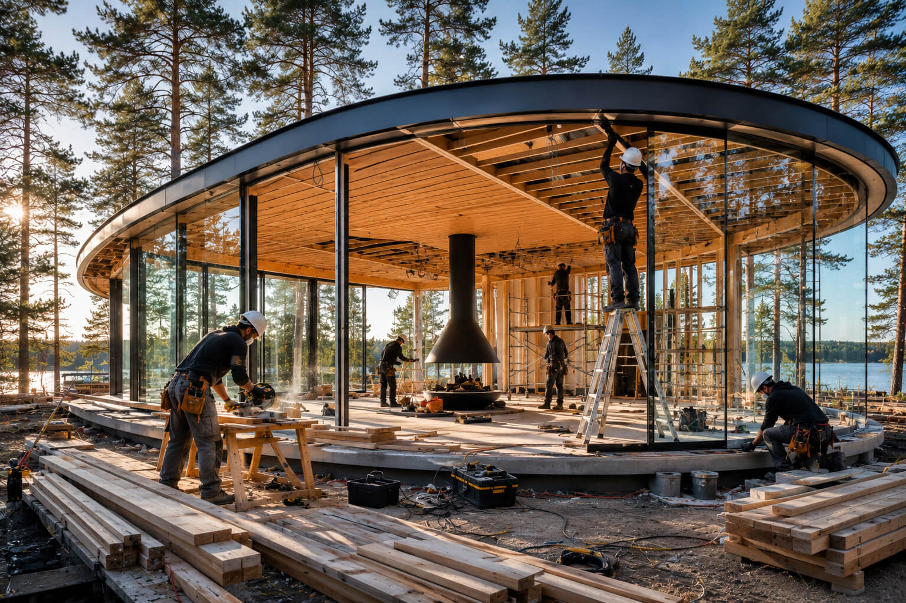
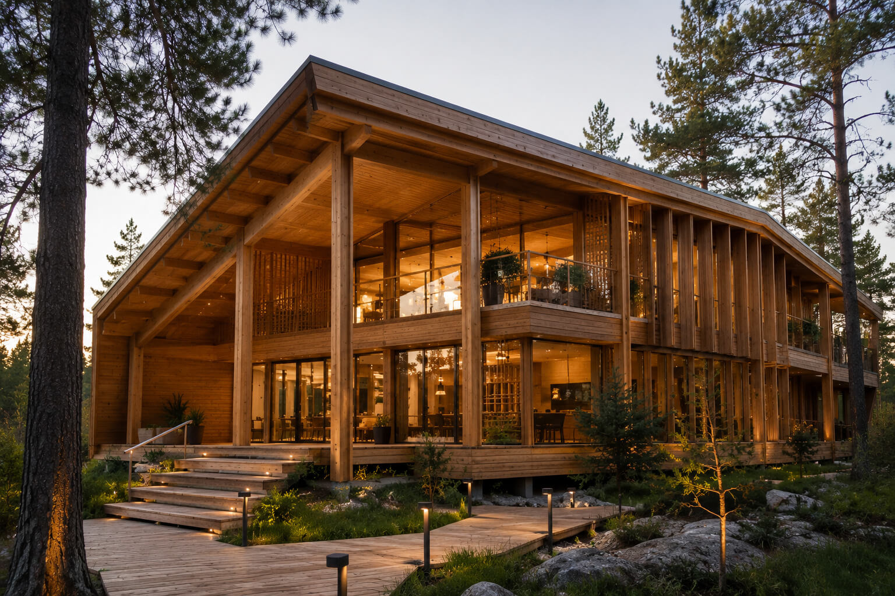
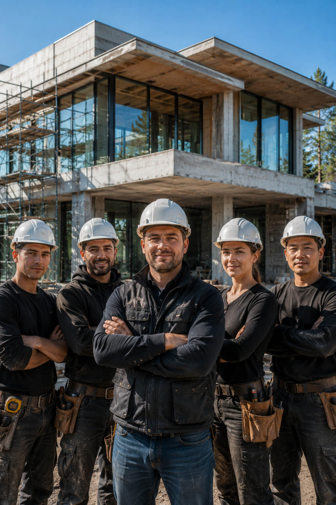
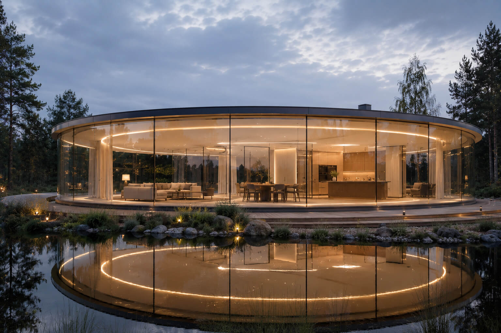
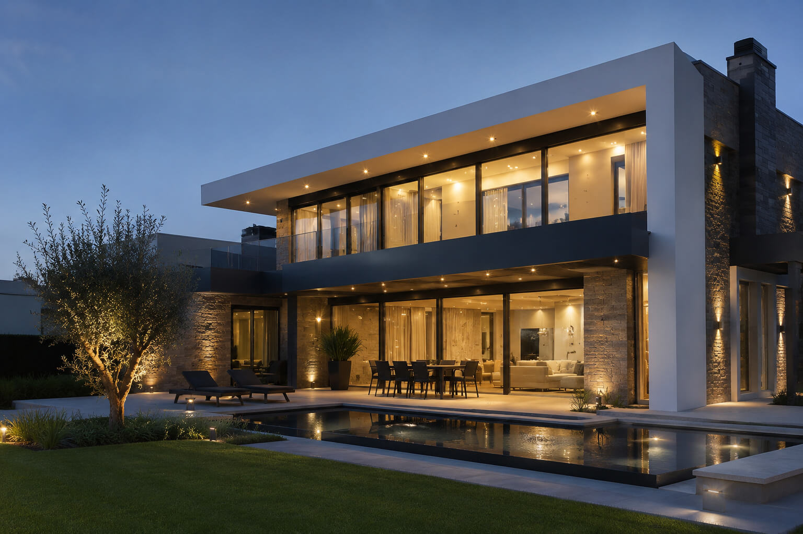
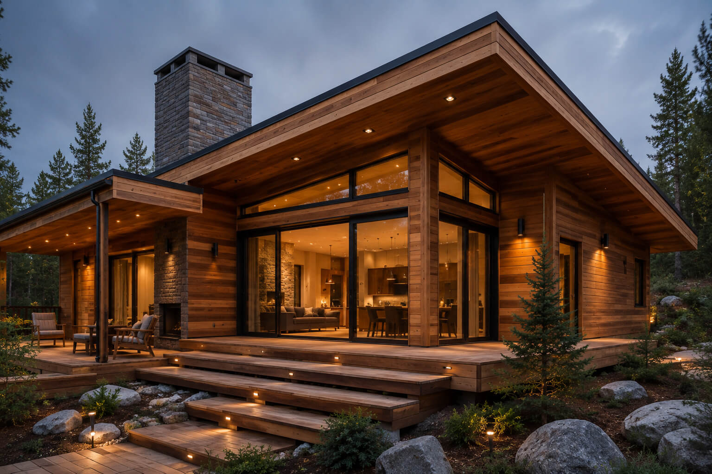
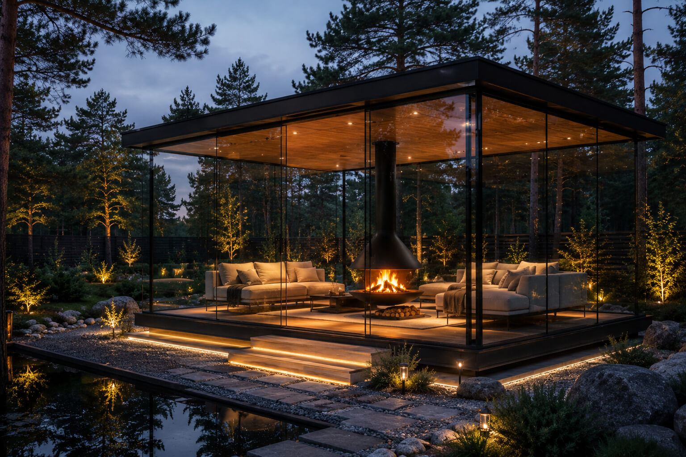
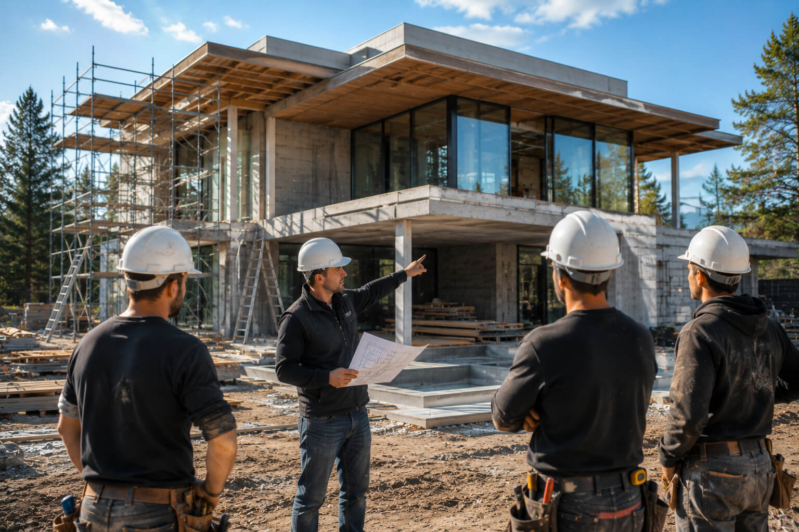

Не вырастет ли цена в процессе?
Смета фиксируется в договоре до начала работ. Если мы ошиблись в расчётах — это наш риск, а не ваш. Изменения возможны только по вашей инициативе и письменно.

Строим в Москве и области с 2011 года
Фиксированная смета в договоре, еженедельная фотофиксация каждого этапа и один прораб, отвечающий за объект от котлована до ключей.
Перед тем как довериться
Это не первый сайт строительной компании, который вы открываете. Поэтому мы отвечаем сразу — без «доверьтесь нам».
Смета фиксируется в договоре до начала работ. Если мы ошиблись в расчётах — это наш риск, а не ваш. Изменения возможны только по вашей инициативе и письменно.
Срок сдачи закреплён в договоре с понедельной неустойкой за просрочку по нашей вине. За 14 лет — 183 объекта, ни один не сорван больше чем на 9 дней.
Еженедельные фотоотчёты с этих же ракурсов, доступ к смете в реальном времени и право привлечь независимого технадзора в любой момент стройки.
Один закреплённый прораб на объект — фамилия и телефон в договоре. Гарантия на конструктив — 10 лет, на инженерные системы — 3 года.
Как мы работаем
Никакой стройки «по доверию». Каждый этап задокументирован и доступен вам онлайн.
Инженер выезжает на участок, делает геодезию и базовый анализ грунта. Вы получаете предварительный расчёт стоимости в течение 5 дней — бесплатно и без обязательств.
Архитектурный и инженерный проект согласовывается с вами поэтажно. Итоговая смета прикладывается к договору как неотъемлемая часть — изменить её в одностороннем порядке мы не можем.
Оплата привязана к этапам, а не к датам. Деньги переводятся за выполненный и принятый объём работ — вы платите за результат, который уже видите.
Еженедельный фотоотчёт с фиксированных точек, личный кабинет с графиком работ и закупок, прямая связь с прорабом без посредников и колл-центров.
Сдача дома по акту с проверкой каждой системы. Гарантийный отдел остаётся на связи 3 года — заявки обрабатываются в течение 48 часов.
Гарантии в договоре, а не на словах
Каждый пункт ниже прописан в типовом договоре СК «Территория» и не является маркетинговым заявлением.


Кто строит ваш дом
Бригады и прорабы оформлены в штат компании, а не привлекаются разово под объект. Это значит, что им важна не сдача в моменте, а репутация на годы вперёд.
штатных специалиста: прорабы, инженеры, монтажники
закреплённый прораб на объект от старта до сдачи
средний стаж бригадира в команде «Территории»
Построенные объекты
Часть из 183 проектов, реализованных командой «Территории» за 14 лет.





Контроль на стройке
Раз в неделю — фотоотчёт с пяти фиксированных точек объекта. Раз в две недели — видеосозвон с прорабом. В любой момент — доступ к смете и графику закупок в личном кабинете.
Остались вопросы
Это нормально. Большинство наших клиентов обращаются за 6–12 месяцев до старта работ — чтобы спланировать бюджет и сезон. Первая консультация и расчёт ни к чему не обязывают, а сохранённая смета остаётся актуальной 90 дней.
Смета составляется после геодезии и согласования проекта — то есть после того, как известны реальные параметры участка и материалов. Поэтому к моменту подписания договора в цене не остаётся «неизвестных», и менять её нам не нужно.
Изменения возможны на любом этапе. Каждое оформляется дополнительным соглашением с пересчётом сроков и стоимости — до начала работ по изменённому пункту, а не постфактум.
Да, мы аккредитованы в нескольких банках для строительства по ипотеке с использованием счетов эскроу — это дополнительная защита ваших средств на время стройки.
10 лет на несущие конструкции, 3 года на инженерные системы. Заявки принимаются по телефону закреплённого менеджера и обрабатываются в течение 48 часов, включая выезд специалиста при необходимости.

Следующий шаг
Оставьте заявку — инженер свяжется с вами в течение рабочего дня, чтобы назначить выезд или ответить на вопросы по телефону. Если стройка планируется не сейчас — мы пришлём ориентировочный расчёт, который останется с вами.